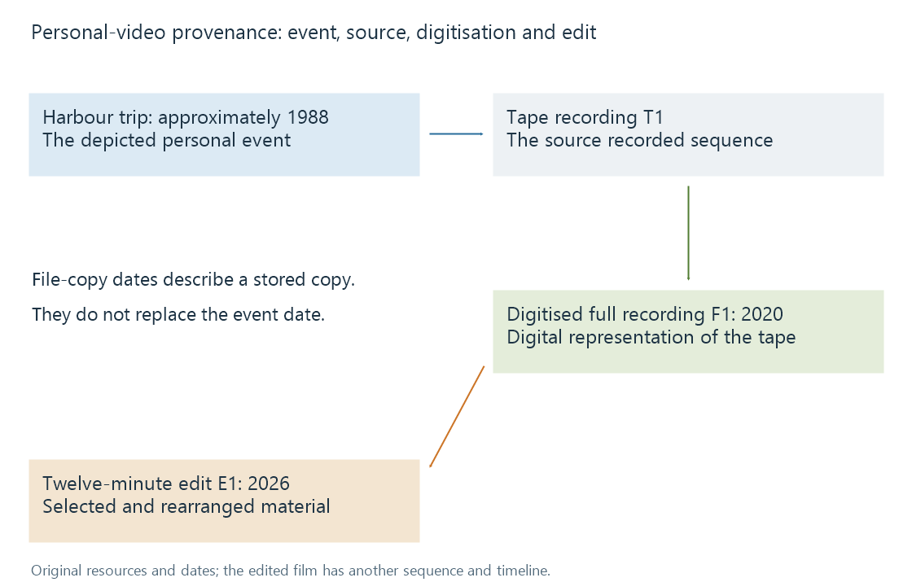

Home video cataloguing
Home video cataloguing describes personal recordings, events and derived edits while preserving the distinct origins and dates of their media resources.
A home video often needs information that no commercial movie catalogue can supply: who or what it depicts, where the event took place, and which recording or edit the resource represents.
A title such as IMG_0428 locates a camera file. A description such as Harbour trip — arrival at the jetty tells a viewer why it is worth opening. Both can be retained instead of using one field to do every job.
Event, recording and edit
An original personal-media example has three resources:
| Resource | Content relationship |
|---|---|
| Original tape recording | Captures several parts of the harbour trip |
| Digitised full recording | Represents that tape's recorded sequence as a digital resource |
| Twelve-minute edited film | Selects and rearranges material from the recording |

The edit is not simply a smaller encode of the full recording. Its sequence and timeline differ. A resume point or chapter list for the digitised tape cannot be copied into the edited film without correspondence.
In an Emby library, the content model provides the context for recognising the resources. The descriptive title and event information supply personal meaning that a codec probe cannot derive.
Four dates can all be correct
| Date in the example | What it describes |
|---|---|
| Approximately 1988 | The depicted trip and original recording, if that is the known evidence |
| 2020 | Digitisation of the tape |
| 2026 | Creation of the twelve-minute edit |
| A later copy timestamp | This stored copy's filesystem history |
Replacing the approximate event year with the exact 2026 export date would make the metadata more precise while describing the wrong event.
Container date fields also need interpretation. A creation value can reflect a digital resource's production or another writer's convention. It does not necessarily recover the date when an old tape's pictures were recorded.
A timecode is another coordinate altogether. It can identify a location within the recording or production timeline; it is not, by itself, the calendar date of the event.
Description should identify the passage
A long recording can contain several events or camera segments. Chapter names such as Arrival, Boat launch and Evening return make those portions easier to find than generic minute counters.
A derived short edit can carry a summary of its selection, while the source description retains the fuller recording context. An association such as edited from recording T1 expresses provenance without claiming identical content.
Where the exact date or person identity is uncertain, a qualified description preserves that uncertainty. “Harbour trip, probably summer 1988” has a different evidential meaning from an invented timestamp of 1 January 1988 at midnight.
Preserve source context when making another representation
Re-encoding can preserve the depicted event while changing resource bytes and technical properties. Editing can change both presentation and sequence. A catalogue description benefits from identifying which operation the new resource represents.
Embedded metadata or associated descriptive records can preserve information beyond the filename. Whether a library imports a particular field depends on its readers; the file's technical stream information and its personal description remain separate evidence.
See Also
- Library content models
- Media item identity
- Photo capture dates and camera clocks
- Packet Timestamps
- XMP metadata